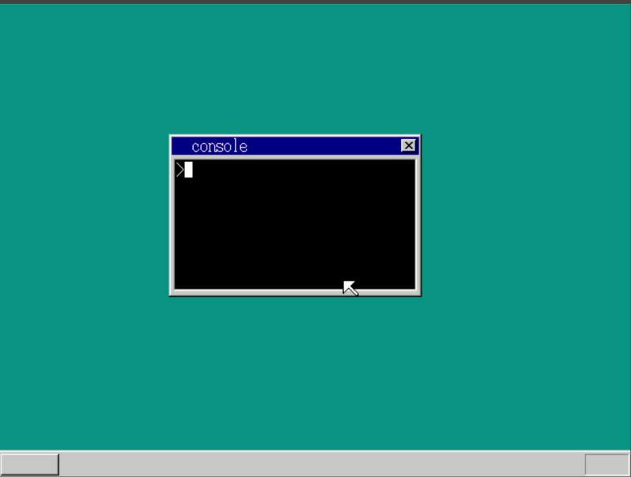
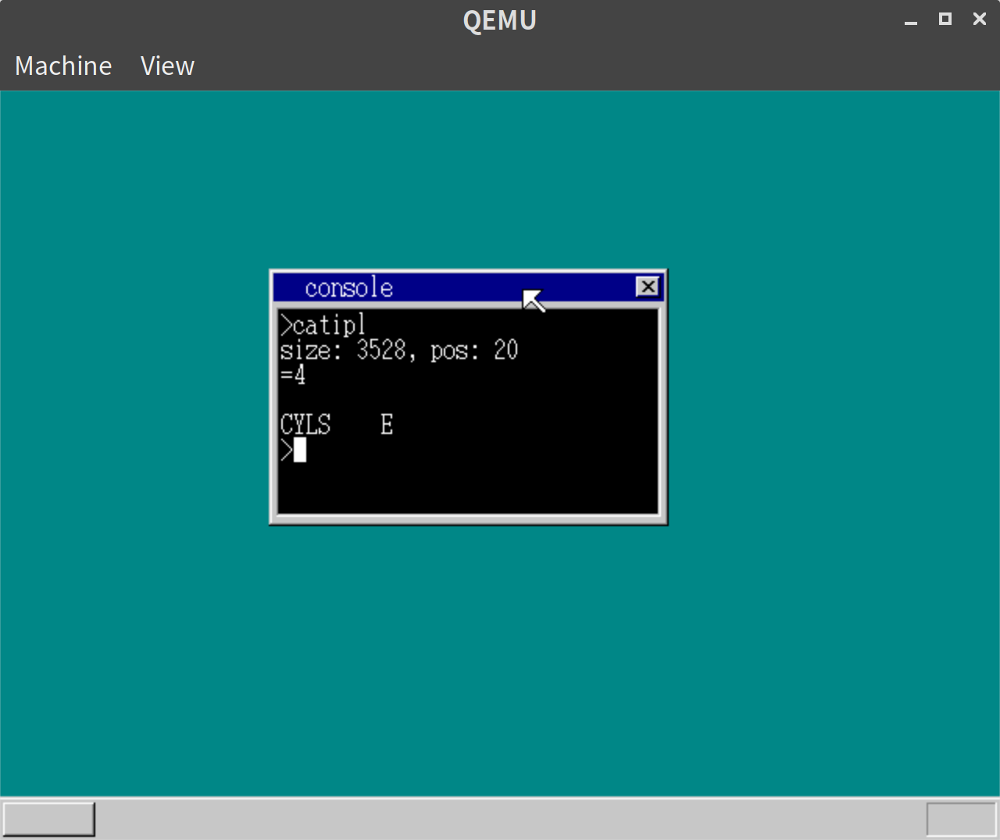
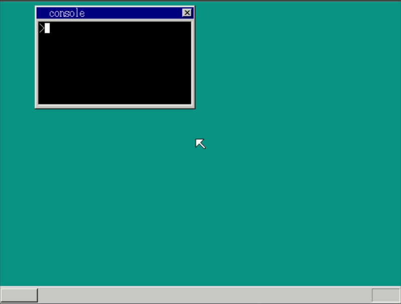
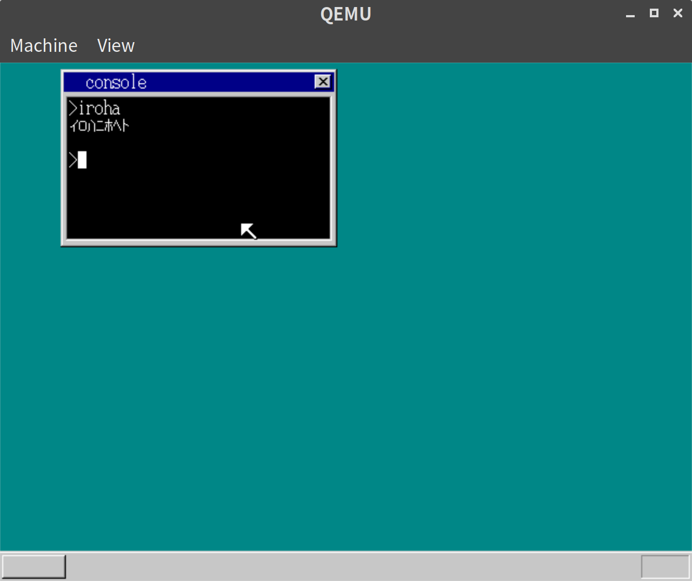
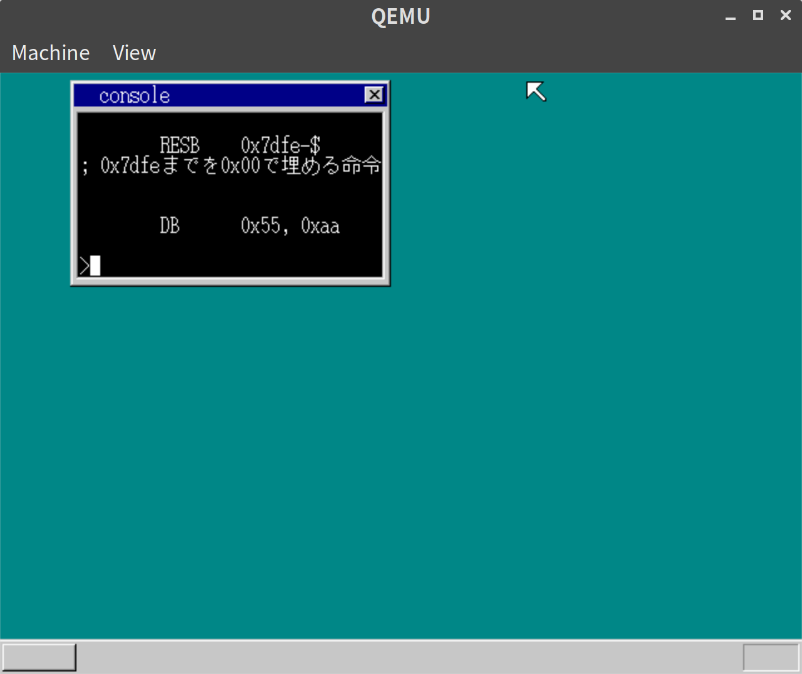
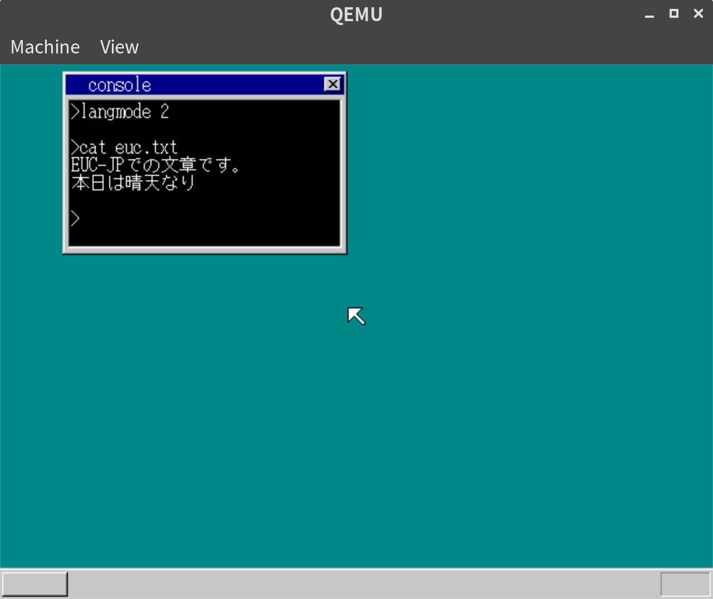
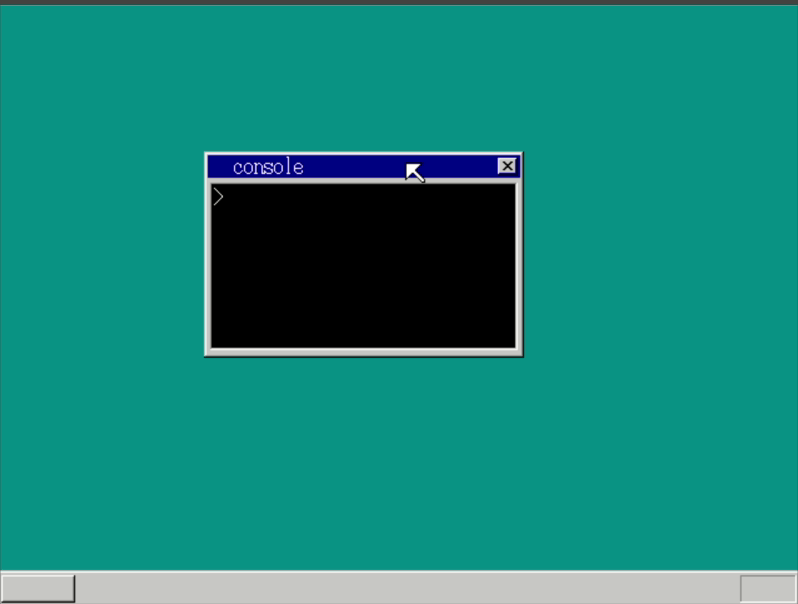

「30日でできる！OS自作入門」をRustで。28日目
「30日でできる！OS自作入門 」のC言語の部分をできるだけRustですすめてみる。今回は28日目の内容。
素数の表示
以下のアプリケーションを実行して素数を表示してみる。
// prim/src/lib.rs
const MAX: usize = 1000;
extern "C" {
fn _api_putstr0(string_ptr: usize);
}
struct Prim {
num: [u8; 5],
ptr: usize,
}
#[no_mangle]
#[start]
pub extern "C" fn hrmain() {
let mut flag: [bool; MAX] = [false; MAX];
use core::fmt::Write;
for i in 2..MAX {
if !flag[i] {
let mut prim = Prim {
num: [0; 5],
ptr: 0,
};
write!(prim, "{} ", i).unwrap();
unsafe {
_api_putstr0(prim.num.as_ptr() as usize);
}
let mut j = i * 2;
while j < MAX {
flag[j] = true;
j += i;
}
}
}
end();
}
impl fmt::Write for Prim {
fn write_str(&mut self, s: &str) -> fmt::Result {
let str_bytes = s.as_bytes();
for i in 0..str_bytes.len() {
if self.ptr >= 5 {
break;
}
self.num[self.ptr] = str_bytes[i];
self.ptr += 1;
}
Ok(())
}
}実行してみて気がついたが、_api_putstr0で呼び出されるput_stringが呼出のたびにcursor_xを初期位置に移動させてしまっており、前の出力を上書きしてしまっていた。
// console.rs
impl Console {
pub fn put_string(
&mut self,
string_addr: usize,
string_length: usize,
initial_x: Option<usize>,
) {
if initial_x.is_some() {
self.cursor_x = initial_x.unwrap() as isize
}
// 省略のようにして初期位置にもどさないオプションもつけられるようにした。
これで以下のように1000までの素数が表示できた。

ここで、本ではallocaの説明にはいっていくのだが、Rustで書いているせいか、allocaを使わなくても問題なく10000までの素数も表示できてしまった。
そこで、allocaについては軽く学んでおくとしてスキップすることにした。
ファイルIOの作成
ファイルIO(とはいえreadのみ)のシステムコールをつくる。
Taskにファイルのメタ情報を持つようにする。
// mt.rs
#[repr(C)]
#[derive(Debug, Clone, Copy)]
pub struct Task {
pub select: i32,
pub flag: TaskFlag,
pub level: usize,
pub priority: i32,
pub tss: TSS,
pub fifo_addr: usize,
pub console_addr: usize,
pub ds_base: usize,
pub console_stack: usize,
pub ldt: [SegmentDescriptor; 2],
pub file_handler_addr: usize, // <- 追加
pub fat_addr: usize, // <- 追加
}
impl Task {
fn new() -> Task {
Task {
select: 0,
flag: TaskFlag::AVAILABLE,
level: 0,
priority: 2,
tss: Default::default(),
fifo_addr: 0,
console_addr: 0,
ds_base: 0,
console_stack: 0,
ldt: [
SegmentDescriptor::new(0, 0, 0),
SegmentDescriptor::new(0, 0, 0),
],
file_handler_addr: 0,
fat_addr: 0,
}
}
}// file.rs
#[derive(Debug, Clone, Copy, PartialEq, Eq)]
#[repr(C)]
pub struct FileHandler {
pub buf_addr: usize,
pub size: i32,
pub pos: i32,
}
impl FileHandler {
pub fn new() -> FileHandler {
FileHandler {
buf_addr: 0,
size: 0,
pos: 0,
}
}
}// console.rs
#[no_mangle]
pub extern "C" fn hrb_api(/* 省略 */) -> usize {
// 省略
} else if edx == 21 {
let fhandlers =
unsafe { &mut *(task.file_handler_addr as *mut [FileHandler; MAX_FILE_HANDLER]) };
let mut fhandler: Option<&mut FileHandler> = None;
for i in 0..MAX_FILE_HANDLER {
if fhandlers[i].buf_addr == 0 {
fhandler = Some(&mut fhandlers[i]);
break;
}
}
let mut i = 0;
loop {
let chr = unsafe { *((ebx as usize + i as usize + ds_base) as *const u8) };
if chr == 0 {
break;
}
i += 1;
}
let filename = unsafe { *((ebx as usize + ds_base) as *const [u8; 30]) };
let fat = unsafe { *(task.fat_addr as *const [u32; MAX_FAT]) };
if let Some(fhandler) = fhandler {
let finfo = search_file(&filename[0..i]);
let reg_eax = unsafe { &mut *((reg + 7 * 4) as *mut usize) };
if let Some(finfo) = finfo {
*reg_eax = fhandler as *const FileHandler as usize;
fhandler.buf_addr = memman.alloc_4k(finfo.size).unwrap() as usize;
fhandler.size = finfo.size as i32;
fhandler.pos = 0;
finfo.load_file(fhandler.buf_addr, &fat, ADR_DISKIMG + 0x003e00);
} else {
*reg_eax = 0;
}
}
} else if edx == 22 {
let mut fh = unsafe { &mut *(eax as *mut FileHandler) };
memman.free_4k(fh.buf_addr as u32, fh.size as u32).unwrap();
fh.buf_addr = 0;
} else if edx == 23 {
let mut fh = unsafe { &mut *(eax as *mut FileHandler) };
if ecx == 0 {
fh.pos = ebx;
} else if ecx == 1 {
fh.pos += ebx;
} else if ecx == 2 {
fh.pos = fh.size + ebx;
}
if fh.pos < 0 {
fh.pos = 0;
}
if fh.pos > fh.size {
fh.pos = fh.size;
}
} else if edx == 24 {
let fh = unsafe { &mut *(eax as *mut FileHandler) };
let reg_eax = unsafe { &mut *((reg + 7 * 4) as *mut i32) };
if ecx == 0 {
*reg_eax = fh.size;
} else if ecx == 1 {
*reg_eax = fh.pos;
} else if ecx == 2 {
*reg_eax = fh.pos - fh.size;
}
} else if edx == 25 {
let mut fh = unsafe { &mut *(eax as *mut FileHandler) };
let mut size: usize = 0;
for i in 0..(ecx as usize) {
if fh.pos == fh.size {
break;
}
let ptr = unsafe { &mut *((ebx as usize + ds_base + i) as *mut u8) };
let buf = unsafe { &*((fh.buf_addr + fh.pos as usize) as *const u8) };
*ptr = *buf;
fh.pos += 1;
size = i + 1;
}
let reg_eax = unsafe { &mut *((reg + 7 * 4) as *mut usize) };
*reg_eax = size;
}
0
}
impl Console {
pub fn cmd_app<'a>(&mut self, filename: &'a [u8], fat: &[u32; MAX_FAT]) {
// 省略
// start_app後
// クローズしていないファイルをクローズ
let fhandlers =
unsafe { &mut *(task.file_handler_addr as *mut [FileHandler; MAX_FILE_HANDLER]) };
for i in 0..8 {
let mut fhandler = &mut fhandlers[i];
if fhandler.buf_addr != 0 {
memman
.free_4k(fhandler.buf_addr as u32, fhandler.size as u32)
.unwrap();
fhandler.buf_addr = 0;
}
}
// 省略
}
}これを使ってテスト用のアプリを作る。
本ではfopenとfreadしか使っていないが、折角なので、いろいろやってみることにした。
// catipl/src/lib.rs
extern "C" {
fn _api_putchar(chr: u8);
fn _api_putstr0(string_ptr: usize);
fn _api_fopen(string_addr: usize) -> usize;
fn _api_fseek(fhandler_addr: usize, offset: i32, mode: i32);
fn _api_fsize(fhandler_addr: usize, mode: i32) -> i32;
fn _api_fread(buf_addr: usize, maxsize: usize, fhandler_addr: usize) -> i32;
}
const STRING_SIZE: usize = 30;
struct FileInfo {
string: [u8; STRING_SIZE],
ptr: usize,
}
#[no_mangle]
#[start]
pub extern "C" fn hrmain() {
use core::fmt::Write;
let fh_addr = unsafe { _api_fopen(b"ipl.asm".as_ptr() as usize) };
if fh_addr == 0 {
return;
}
unsafe { _api_fseek(fh_addr, 20, 0) };
let filesize = unsafe { _api_fsize(fh_addr, 0) };
let filepos = unsafe { _api_fsize(fh_addr, 1) };
let mut file_info = FileInfo {
string: [0; STRING_SIZE],
ptr: 0,
};
write!(file_info, "size: {}, pos: {}\n", filesize, filepos).unwrap();
unsafe { _api_putstr0(file_info.string.as_ptr() as usize) };
let buf = [0];
for i in 0..10 {
if unsafe { _api_fread(buf.as_ptr() as usize, 1, fh_addr) } == 0 {
break;
}
unsafe { _api_putchar(buf[0] as u8) };
}
end();
}最初の20バイトを読み飛ばした上で、10バイトだけとってくるようなアプリになっている
実行結果
以下の通り、ipl.asmの一部を表示することができた。

catコマンドをアプリケーションに置き換える
catをOS組み込みで作っていたが、アプリケーションで置き換える。
コンソールからファイル名をうけとれるようにするために、そのようなシステムコールを作る。
// console.rs
} else if edx == 26 {
let mut i = 0;
loop {
let ptr = unsafe { &mut *((ebx as usize + ds_base + i) as *mut u8) };
let buf = unsafe { &*((task.cmdline_addr + i) as *const u8) };
*ptr = *buf;
if *buf == 0 {
break;
}
i += 1;
}
let reg_eax = unsafe { &mut *((reg + 7 * 4) as *mut usize) };
*reg_eax = i;
}もともとの実行されたコマンドラインはTaskにもつようにした。
// mt.rs
#[repr(C)]
#[derive(Debug, Clone, Copy)]
pub struct Task {
pub select: i32,
pub flag: TaskFlag,
pub level: usize,
pub priority: i32,
pub tss: TSS,
pub fifo_addr: usize,
pub console_addr: usize,
pub ds_base: usize,
pub console_stack: usize,
pub ldt: [SegmentDescriptor; 2],
pub file_handler_addr: usize,
pub fat_addr: usize,
pub cmdline_addr: usize, // <- 追加
}// console.rs
pub extern "C" fn console_task(sheet_index: usize, memtotal: usize) {
// 省略
{
let mut task = &mut task_manager.tasks_data[task_index];
task.console_addr = &console as *const Console as usize;
fifo_addr = task.fifo_addr;
task.file_handler_addr = fhandlers.as_ptr() as usize;
task.fat_addr = fat_addr as usize;
task.cmdline_addr = cmdline.as_ptr() as usize; // <- 追加
}
// 省略アプリケーションは以下の通り。
// cat/src/lib.rs
#[no_mangle]
#[start]
pub extern "C" fn hrmain() {
let cmdline: [u8; 30] = [0; 30];
unsafe { _api_cmdline(cmdline.as_ptr() as usize, 30) };
let mut filename_index = 0;
while cmdline[filename_index] > b' ' {
filename_index += 1;
}
while cmdline[filename_index] == b' ' {
filename_index += 1;
}
let fh_addr = unsafe { _api_fopen(cmdline.as_ptr() as usize + filename_index) };
if fh_addr != 0 {
loop {
let b: u8 = 0;
if unsafe { _api_fread(&b as *const u8 as usize, 1, fh_addr) } == 0 {
break;
}
unsafe { _api_putchar(b) };
}
} else {
unsafe { _api_putstr0(b"File not found".as_ptr() as usize) };
}
end();
}もちろん、既存のcmd_catは削除している。
実行結果
以下の通り、cat コマンドをアプリケーションとして実行することができた

日本語フォントの導入
フォントファイルのロード
日本語表示ができるようにする。
まずはTaskにlang_modeという表示モードを持たせるようにする
#[repr(C)]
#[derive(Debug, Clone, Copy)]
pub struct Task {
pub select: i32,
pub flag: TaskFlag,
pub level: usize,
pub priority: i32,
pub tss: TSS,
pub fifo_addr: usize,
pub console_addr: usize,
pub ds_base: usize,
pub console_stack: usize,
pub ldt: [SegmentDescriptor; 2],
pub file_handler_addr: usize,
pub fat_addr: usize,
pub cmdline_addr: usize,
pub lang_mode: LangMode, // <- 追加a
}
#[derive(Debug, Clone, Copy, PartialEq, Eq)]
#[repr(u8)]
pub enum LangMode {
En = 0,
JpJis = 1,
JpEuc = 2,
}
pub fn to_lang_mode(mode: u8) -> LangMode {
use LangMode::*;
match mode {
1 => JpJis,
2 => JpEuc,
_ => En,
}
}フォントファイルは本のものをそのまま使う
// lib.rs
#[no_mangle]
#[start]
pub extern "C" fn hrmain() {
// 省略
let finfo = search_file(b"nihongo.fnt");
if let Some(finfo) = finfo {
finfo.load_file(nihongo_addr, fat, ADR_DISKIMG + 0x003e00)
} else {
// ロードできなかったら半角フォントをコピー
for i in 0..(16 * 256) {
let font_index = i % 256;
let byte_index = i - font_index;
let byte_as_bools = HANKAKU[font_index][byte_index];
let mut byte = 0;
for bi in 0..8 {
if byte_as_bools[bi] {
byte += 1 << (8 - bi)
}
}
let ptr = unsafe { &mut *((nihongo_addr + i) as *mut u8) };
*ptr = byte as u8;
}
for i in (16 * 256)..(16 * 256 + 32 * 94 * 47) {
let ptr = unsafe { &mut *((nihongo_addr + i) as *mut u8) };
*ptr = 0xff;
}
}
let nihongo_ptr = unsafe { &mut *((NIHONGO_ADDR) as *mut usize) };
*nihongo_ptr = nihongo_addr;
memman.free_4k(fat_addr, 4 * MAX_FAT as u32).unwrap();
// 省略
}他にも細かいところは修正したが省略する。
ここまでで以下のようなアプリケーションで半角カタカナが表示できる。
// iroha/lib/src.rb
#[no_mangle]
#[start]
pub extern "C" fn hrmain() {
let iroha: [u8; 9] = [0xb2, 0xdb, 0xca, 0xc6, 0xce, 0xcd, 0xc4, 0x0a, 0x00];
unsafe { _api_putstr0(iroha.as_ptr() as usize) };
end();
}実行結果
以下の通り、cat コマンドをアプリケーションとして実行することができた

全角表示
全角表示部分を追加する。
ちょっと汚いが、Consoleの方に全角の表示ロジックは入れた。
細かいところを記載すると多いので、概要だけ載せる。
// mt.rs
#[repr(C)]
#[derive(Debug, Clone, Copy)]
pub struct Task {
pub select: i32,
pub flag: TaskFlag,
pub level: usize,
pub priority: i32,
pub tss: TSS,
pub fifo_addr: usize,
pub console_addr: usize,
pub ds_base: usize,
pub console_stack: usize,
pub ldt: [SegmentDescriptor; 2],
pub file_handler_addr: usize,
pub fat_addr: usize,
pub cmdline_addr: usize,
pub lang_mode: LangMode,
pub lang_byte1: u8, // <- 追加
}全角文字を出す場合に、2バイト分の内容が必要になるので、1バイト目をタスクに記憶している。
表示ロジックは本と同様なので割愛する。
実行結果
本のipl20.nasをcatして、以下のように漢字やひらがなが表示されたことが確認できた。

EUC対応
EUC対応も本にならって導入する。
ほぼJISの場合と同じなので、コードは割愛する。
実行結果
langmode 2を指定することで、EUCで作ったテキストファイルを表示できた。

langmodeを確認できるシステムコール
langmodeもアプリケーションから確認できるようにする。
// console.rs
#[no_mangle]
pub extern "C" fn hrb_api(/* 省略 */) -> usize {
// 省略
} else if edx == 27 {
let reg_eax = unsafe { &mut *((reg + 7 * 4) as *mut LangMode) };
*reg_eax = task.lang_mode;
}
0
}これでアプリケーションはlangmodeによって文字コードを切り替えて表示することができる。
// chklang/src/lib.rs
extern "C" {
fn _api_putstr0(string_ptr: usize);
fn _api_getlang() -> usize;
}
#[no_mangle]
#[start]
pub extern "C" fn hrmain() {
let langmode = unsafe { _api_getlang() };
// 日本語シフトJISモード
let s1: [u8; 23] = [
0x93, 0xfa, 0x96, 0x7b, 0x8c, 0xea, 0x83, 0x56, 0x83, 0x74, 0x83, 0x67, 0x4a, 0x49, 0x53,
0x83, 0x82, 0x81, 0x5b, 0x83, 0x68, 0x0a, 0x00,
];
// 日本語EUCモード
let s2: [u8; 17] = [
0xc6, 0xfc, 0xcb, 0xdc, 0xb8, 0xec, 0x45, 0x55, 0x43, 0xa5, 0xe2, 0xa1, 0xbc, 0xa5, 0xc9,
0x0a, 0x00,
];
match langmode {
0 => unsafe {
_api_putstr0(b"English ASCII mode\n\0".as_ptr() as usize);
},
1 => unsafe {
_api_putstr0(s1.as_ptr() as usize);
},
2 => unsafe {
_api_putstr0(s2.as_ptr() as usize);
},
_ => unsafe {
// Nothing to do
}
}
end();
}実行結果
以下の通り、langmodeによってメッセージを切り替えることができた。

28日目は以上となる。ここまでの内容のコードはyoshitsugu/hariboteos_in_rustのday28としてタグを打ってある。